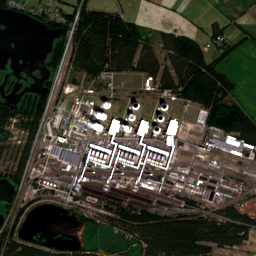
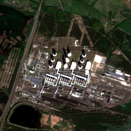

Janschwalde Power Station
Interpretationno meaningful change
Cosine similarity0.9961
L2 distance0.3755


Janschwalde Power Station: Clay Evidence Note
Finding
- Interpretation: no meaningful change
- Cosine similarity: 0.9961
- L2 distance: 0.3755
- Comparison window: 2024-06 to 2026-05
Asset
- Name: Janschwalde power station
- Country: Germany
- Status: operating
- Capacity: 5,210 MW
- Annual CO2 estimate: 8.04 Mt/year
- Owner: Lausitz Energie Kraftwerke AG [100%]
- Parent: EP Group AS; unknown
Imagery
- Sensor: sentinel-2-l2a
- Bands: B02, B03, B04, B08
- Tile A: 2024-06
- Tile B: 2026-05
- Tile A cloud: n/a%
- Tile B cloud: n/a%
Caution
The Clay embedding comparison indicates no meaningful visible/spectral change between the selected Sentinel-2 scenes. This supports a narrow claim of visual continuity, not a claim about generation, fuel use, or emissions without further data.